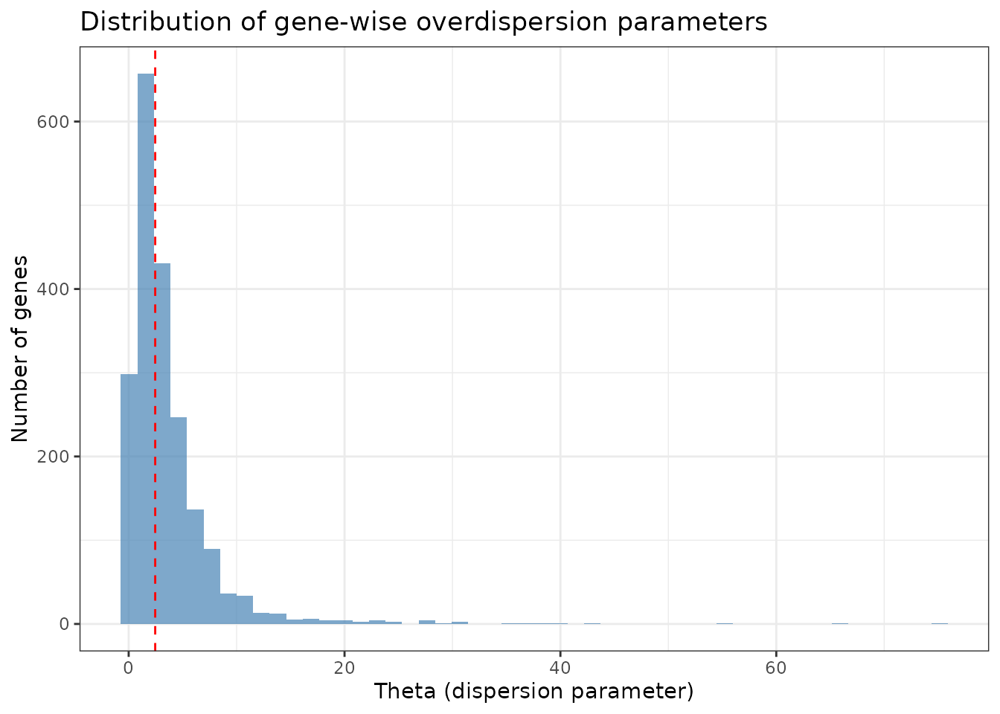
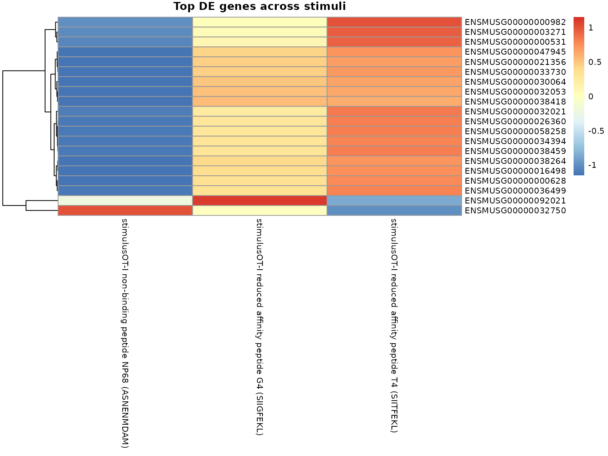
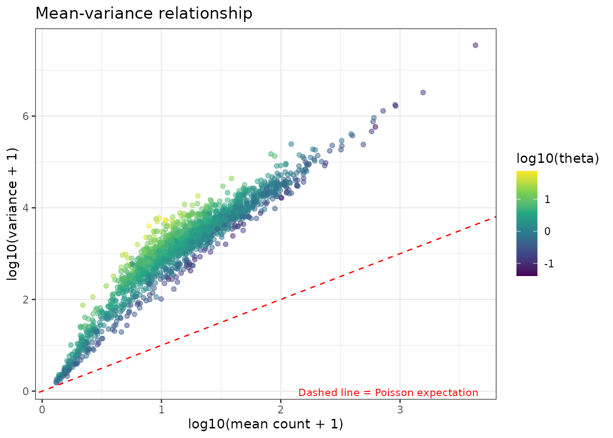

Differential expression with multiple covariates
Source:vignettes/multiple_covariates.Rmd
multiple_covariates.Rmd
library(devil)
library(scRNAseq)
library(SingleCellExperiment)
library(Matrix)
library(dplyr)
library(ggplot2)
library(tidyr)In this vignette we illustrate how to use devil with
a non-trivial design matrix including multiple
covariates, using the RichardTCellData() dataset from the
scRNAseq package. We’ll show how to:
- Fit a model with multiple covariates
- Extract and interpret coefficients
- Perform differential expression testing
- Visualize results
Loading the dataset
sce <- scRNAseq::RichardTCellData()
#> downloading 1 resources
#> retrieving 1 resource
#> loading from cache
#> require("ensembldb")
sce
#> class: SingleCellExperiment
#> dim: 46603 572
#> metadata(0):
#> assays(1): counts
#> rownames(46603): ENSMUSG00000102693 ENSMUSG00000064842 ...
#> ENSMUSG00000096730 ENSMUSG00000095742
#> rowData names(0):
#> colnames(572): SLX-12611.N701_S502. SLX-12611.N702_S502. ...
#> SLX-12612.i712_i522. SLX-12612.i714_i522.
#> colData names(13): age individual ... stimulus time
#> reducedDimNames(0):
#> mainExpName: endogenous
#> altExpNames(1): ERCC
colnames(colData(sce))
#> [1] "age" "individual"
#> [3] "single cell well quality" "post-analysis well quality"
#> [5] "single cell quality" "CD69 measurement (log10)"
#> [7] "CD25 measurement (log10)" "CD44 measurement (log10)"
#> [9] "CD62L measurement (log10)" "sorting plate well"
#> [11] "sequencing plate well" "stimulus"
#> [13] "time"
head(as.data.frame(colData(sce))[, c("individual", "age", "stimulus", "time", "single.cell.quality")])
#> individual age stimulus
#> SLX-12611.N701_S502. 1 25 OT-I reduced affinity peptide G4 (SIIGFEKL)
#> SLX-12611.N702_S502. 1 25 OT-I reduced affinity peptide G4 (SIIGFEKL)
#> SLX-12611.N703_S502. 1 25 OT-I reduced affinity peptide G4 (SIIGFEKL)
#> SLX-12611.N704_S502. 1 25 OT-I reduced affinity peptide G4 (SIIGFEKL)
#> SLX-12611.N705_S502. 1 25 OT-I reduced affinity peptide G4 (SIIGFEKL)
#> SLX-12611.N706_S502. 1 25 OT-I reduced affinity peptide G4 (SIIGFEKL)
#> time single.cell.quality
#> SLX-12611.N701_S502. 6 OK
#> SLX-12611.N702_S502. 6 OK
#> SLX-12611.N703_S502. 6 OK
#> SLX-12611.N704_S502. 6 OK
#> SLX-12611.N705_S502. 6 OK
#> SLX-12611.N706_S502. 6 OKBasic filtering
We keep only cells flagged as high quality and do light gene filtering for speed.
# Keep only good-quality cells
sce <- sce[, sce$`single cell quality` == "OK"]
# Make sure key covariates are factors
sce$individual <- factor(sce$individual)
sce$age <- factor(sce$age) # e.g. "young"/"old"
sce$stimulus <- droplevels(factor(sce$stimulus))
sce$time <- as.numeric(sce$time)
sce$time_factor <- factor(sce$time, levels = sort(unique(sce$time)))
# Quick summary
table(sce$stimulus, sce$time_factor)
#>
#> 1 3 6
#> OT-I high affinity peptide N4 (SIINFEKL) 51 64 91
#> OT-I non-binding peptide NP68 (ASNENMDAM) 0 0 93
#> OT-I reduced affinity peptide G4 (SIIGFEKL) 0 0 94
#> OT-I reduced affinity peptide T4 (SIITFEKL) 0 0 91
#> unstimulated 0 0 0
table(sce$age)
#>
#> 11.5 25
#> 344 184
length(unique(sce$individual))
#> [1] 2Filter genes with very low counts (optional):
counts <- assay(sce, "counts")
keep_genes <- Matrix::rowMeans(counts) > .1 & rowSums(counts > 0) > 100
sce <- sce[keep_genes, ]
sce <- sce[, sce$stimulus != "unstimulated"]
dim(sce)
#> [1] 7267 484For this vignette, we subsample further so that devil
runs very quickly:
set.seed(123)
n_genes <- min(2000, nrow(sce))
n_cells <- min(3000, ncol(sce))
gene_idx <- sample(seq_len(nrow(sce)), n_genes)
cell_idx <- sample(seq_len(ncol(sce)), n_cells)
sce_sub <- sce[gene_idx, cell_idx]
sce_sub
#> class: SingleCellExperiment
#> dim: 2000 484
#> metadata(0):
#> assays(1): counts
#> rownames(2000): ENSMUSG00000038342 ENSMUSG00000060261 ...
#> ENSMUSG00000021076 ENSMUSG00000026005
#> rowData names(0):
#> colnames(484): SLX-12611.N718_S515. SLX-12611.N721_S517. ...
#> SLX-12612.i723_i507. SLX-12612.i716_i513.
#> colData names(14): age individual ... time time_factor
#> reducedDimNames(0):
#> mainExpName: endogenous
#> altExpNames(1): ERCCFrom now on we’ll work with sce_sub.
Building a complex design matrix
We consider a model with:
-
Main effects:
stimulus(different T cell stimulation conditions),age - Reference levels: The first level of each factor will be the baseline
meta_df <- as.data.frame(colData(sce_sub))
meta_df$stimulus <- droplevels(factor(meta_df$stimulus))
meta_df$time_factor <- factor(meta_df$time_factor)
meta_df$age <- meta_df$age
meta_df$individual <- factor(meta_df$individual)
design <- model.matrix(
~ stimulus + age,
data = meta_df
)
head(design)
#> (Intercept)
#> SLX-12611.N718_S515. 1
#> SLX-12611.N721_S517. 1
#> SLX-12611.N716_S516. 1
#> SLX-12612.i718_i503. 1
#> SLX-12612.i720_i513. 1
#> SLX-12612.i714_i505. 1
#> stimulusOT-I non-binding peptide NP68 (ASNENMDAM)
#> SLX-12611.N718_S515. 0
#> SLX-12611.N721_S517. 0
#> SLX-12611.N716_S516. 0
#> SLX-12612.i718_i503. 0
#> SLX-12612.i720_i513. 0
#> SLX-12612.i714_i505. 0
#> stimulusOT-I reduced affinity peptide G4 (SIIGFEKL)
#> SLX-12611.N718_S515. 0
#> SLX-12611.N721_S517. 1
#> SLX-12611.N716_S516. 1
#> SLX-12612.i718_i503. 0
#> SLX-12612.i720_i513. 1
#> SLX-12612.i714_i505. 1
#> stimulusOT-I reduced affinity peptide T4 (SIITFEKL) age25
#> SLX-12611.N718_S515. 1 1
#> SLX-12611.N721_S517. 0 1
#> SLX-12611.N716_S516. 0 1
#> SLX-12612.i718_i503. 0 0
#> SLX-12612.i720_i513. 0 0
#> SLX-12612.i714_i505. 0 0
colnames(design)
#> [1] "(Intercept)"
#> [2] "stimulusOT-I non-binding peptide NP68 (ASNENMDAM)"
#> [3] "stimulusOT-I reduced affinity peptide G4 (SIIGFEKL)"
#> [4] "stimulusOT-I reduced affinity peptide T4 (SIITFEKL)"
#> [5] "age25"The design matrix includes:
-
(Intercept): Baseline expression level -
stimulus*: Effects of different stimulation conditions relative to the reference -
age*: Effect of age group
Fitting the devil model
Now, fit_devil() takes a count matrix and a design
matrix and returns coefficients and overdispersions.
Y <- as.matrix(assay(sce_sub, "counts"))
devil_fit <- devil::fit_devil(
input_matrix = Y,
design_matrix = design,
verbose = TRUE,
init_beta_rough = FALSE,
size_factors = "normed_sum",
overdispersion = "MOM"
)
#> Compute size factors
#> Calculating size factors using method: normed_sum
#> Size factors calculated successfully.
#> Range: [0.1449, 18.1165]
#> Initialize theta
#> Initialize beta
#> Fitting beta coefficients
#> Fit overdispersion (mode = MOM)Interpreting the model coefficients
The fitted model contains coefficient estimates (log-scale) for each gene and each term in the design matrix.
# Extract coefficient matrix (genes x coefficients)
beta_matrix <- devil_fit$beta
dim(beta_matrix)
#> [1] 2000 5
colnames(beta_matrix) = colnames(design)
# Look at coefficient distributions for a few terms
coef_df <- as.data.frame(beta_matrix) %>%
mutate(gene = rownames(beta_matrix))
# Visualize coefficient distributions
coef_long <- coef_df %>%
pivot_longer(cols = -gene, names_to = "coefficient", values_to = "value")
ggplot(coef_long %>% dplyr::filter(coefficient != "(Intercept)"),
aes(x = value, fill = coefficient)) +
geom_density(alpha = 0.5) +
facet_wrap(~coefficient, scales = "free") +
theme_bw() +
labs(title = "Distribution of coefficient estimates across genes",
x = "Coefficient value (log scale)",
y = "Density") +
theme(legend.position = "none")
Interpretation:
- Coefficients represent log-fold changes relative to the baseline (intercept)
- Large positive coefficients indicate upregulation
- Large negative coefficients indicate downregulation
- Coefficients near zero suggest little effect
# Extract overdispersion parameters
theta_vec <- devil_fit$overdispersion
names(theta_vec) = rownames(Y)
summary(theta_vec)
#> Min. 1st Qu. Median Mean 3rd Qu. Max.
#> 0.04054 1.31511 2.45837 3.66026 4.48420 75.12339
# Visualize overdispersion distribution
data.frame(theta = theta_vec, gene = names(theta_vec)) %>%
ggplot(aes(x = theta)) +
geom_histogram(bins = 50, fill = "steelblue", alpha = 0.7) +
theme_bw() +
labs(title = "Distribution of gene-wise overdispersion parameters",
x = "Theta (dispersion parameter)",
y = "Number of genes") +
geom_vline(xintercept = median(theta_vec), linetype = "dashed", color = "red")
Interpretation: Higher theta values indicate less overdispersion (more Poisson-like), while lower values indicate more overdispersion (more variability than expected).
Differential expression testing
Now let’s test for differential expression. We’ll test specific hypotheses using Wald tests.
Testing stimulus effects
Let’s identify genes differentially expressed in response to different stimuli:
# For demonstration, we'll create a simplified test
stimulus_coefs <- grep("^stimulus", colnames(beta_matrix), value = TRUE)
# Test each stimulus coefficient
de_results_list <- lapply(stimulus_coefs, function(coef) {
contrast_vector = as.numeric(colnames(beta_matrix) == coef)
# Simple approach: test if coefficient significantly different from 0
de_res = devil::test_de(devil_fit, contrast = contrast_vector, clusters = meta_df$individual, max_lfc = 100)
de_res %>% dplyr::mutate(coefficient = coef)
})
#> Converting clusters to numeric factors
#> Converting clusters to numeric factors
#> Converting clusters to numeric factors
de_results <- bind_rows(de_results_list)
# Summary of DE genes per stimulus
de_summary <- de_results %>%
group_by(coefficient) %>%
summarise(
n_de = sum(adj_pval < 0.05),
n_up = sum(adj_pval < 0.05 & lfc > 0),
n_down = sum(adj_pval < 0.05 & lfc < 0),
.groups = "drop"
)
print(de_summary)
#> # A tibble: 3 × 4
#> coefficient n_de n_up n_down
#> <chr> <int> <int> <int>
#> 1 stimulusOT-I non-binding peptide NP68 (ASNENMDAM) 533 261 272
#> 2 stimulusOT-I reduced affinity peptide G4 (SIIGFEKL) 139 70 69
#> 3 stimulusOT-I reduced affinity peptide T4 (SIITFEKL) 19 9 10Volcano plots
Visualize the differential expression results:
# Create volcano plot for each stimulus
de_results %>%
mutate(
de_status = case_when(
adj_pval < 0.05 & lfc > 0.5 ~ "Up",
adj_pval < 0.05 & lfc < -0.5 ~ "Down",
TRUE ~ "Not DE"
)
) %>%
ggplot(aes(x = lfc, y = -log10(adj_pval), color = de_status)) +
geom_point(alpha = 0.6, size = 1.5) +
facet_wrap(~coefficient, scales = "free") +
scale_color_manual(values = c("Up" = "red", "Down" = "blue", "Not DE" = "gray")) +
theme_bw() +
labs(title = "Volcano plots for stimulus effects",
x = "Log fold change",
y = "-log10(p-value)",
color = "DE status") +
geom_hline(yintercept = -log10(0.05), linetype = "dashed", alpha = 0.5) +
geom_vline(xintercept = c(-0.5, 0.5), linetype = "dashed", alpha = 0.5)
Top differentially expressed genes
# Extract top DE genes for each stimulus
top_genes <- de_results %>%
dplyr::filter(adj_pval < 0.05) %>%
dplyr::group_by(coefficient) %>%
dplyr::arrange(adj_pval) %>%
dplyr::slice_head(n = 10) %>%
dplyr::select(coefficient, name, lfc, adj_pval)
print(top_genes)
#> # A tibble: 30 × 4
#> # Groups: coefficient [3]
#> coefficient name lfc adj_pval
#> <chr> <chr> <dbl> <dbl>
#> 1 stimulusOT-I non-binding peptide NP68 (ASNENMDAM) ENSMUSG0000… -1.72 6.55e-39
#> 2 stimulusOT-I non-binding peptide NP68 (ASNENMDAM) ENSMUSG0000… 2.47 7.58e-36
#> 3 stimulusOT-I non-binding peptide NP68 (ASNENMDAM) ENSMUSG0000… -2.17 1.63e-21
#> 4 stimulusOT-I non-binding peptide NP68 (ASNENMDAM) ENSMUSG0000… -1.87 2.74e-20
#> 5 stimulusOT-I non-binding peptide NP68 (ASNENMDAM) ENSMUSG0000… 1.73 1.12e-19
#> 6 stimulusOT-I non-binding peptide NP68 (ASNENMDAM) ENSMUSG0000… -6.27 2.45e-19
#> 7 stimulusOT-I non-binding peptide NP68 (ASNENMDAM) ENSMUSG0000… -4.06 2.97e-17
#> 8 stimulusOT-I non-binding peptide NP68 (ASNENMDAM) ENSMUSG0000… 1.96 1.41e-16
#> 9 stimulusOT-I non-binding peptide NP68 (ASNENMDAM) ENSMUSG0000… -4.56 4.68e-16
#> 10 stimulusOT-I non-binding peptide NP68 (ASNENMDAM) ENSMUSG0000… 2.56 3.41e-15
#> # ℹ 20 more rowsHeatmap of top DE genes
# Get top 20 most variable DE genes
top_de_genes <- de_results %>%
dplyr::filter(adj_pval < 0.05) %>%
dplyr::group_by(name) %>%
dplyr::summarise(max_abs_lfc = max(abs(lfc)), .groups = "drop") %>%
dplyr::arrange(desc(max_abs_lfc)) %>%
dplyr::slice_head(n = 20) %>%
dplyr::pull(name)
if (length(top_de_genes) > 0) {
# Extract coefficients for top genes
top_coef_matrix <- beta_matrix[top_de_genes, stimulus_coefs, drop = FALSE]
# Create heatmap
pheatmap::pheatmap(
top_coef_matrix,
scale = "row",
cluster_cols = FALSE,
main = "Top DE genes across stimuli",
fontsize = 8
)
}
Testing age effects
# Test for age effect if present in model
age_coefs <- grep("^age", colnames(beta_matrix), value = TRUE)
if (length(age_coefs) > 0) {
contrast_vector = as.numeric(colnames(beta_matrix) == age_coefs)
age_de <- devil::test_de(devil_fit, contrast = contrast_vector, clusters = meta_df$individual)
print(paste("Number of age-associated DE genes (FDR < 0.05):", sum(age_de$adj_pval < 0.05)))
# Show top age-associated genes
print(head(age_de))
}
#> Converting clusters to numeric factors
#> [1] "Number of age-associated DE genes (FDR < 0.05): 466"
#> # A tibble: 6 × 4
#> name pval adj_pval lfc
#> <chr> <dbl> <dbl> <dbl>
#> 1 ENSMUSG00000038342 0.146 0.313 0.320
#> 2 ENSMUSG00000060261 0.126 0.284 -0.298
#> 3 ENSMUSG00000029198 0.00268 0.0159 0.608
#> 4 ENSMUSG00000082951 0.00730 0.0356 0.493
#> 5 ENSMUSG00000022204 0.0935 0.232 -0.316
#> 6 ENSMUSG00000063802 0.0423 0.130 0.403Mean-variance relationship
Let’s also plot the mean-variance relationship, to see how far is the model from a simple Poisson
# Mean-variance relationship
gene_means <- rowMeans(Y)
gene_vars <- apply(Y, 1, var)
plot_df <- data.frame(
mean = gene_means,
variance = gene_vars,
theta = theta_vec
)
ggplot(plot_df, aes(x = log10(mean + 1), y = log10(variance + 1))) +
geom_point(aes(color = log10(theta)), alpha = 0.5) +
geom_abline(slope = 1, intercept = 0, linetype = "dashed", color = "red") +
scale_color_viridis_c() +
theme_bw() +
labs(title = "Mean-variance relationship",
x = "log10(mean count + 1)",
y = "log10(variance + 1)",
color = "log10(theta)") +
annotate("text", x = Inf, y = -Inf,
label = "Dashed line = Poisson expectation",
hjust = 1.1, vjust = -0.5, size = 3, color = "red")
Summary
In this vignette we demonstrated:
- Model fitting with complex designs including multiple factors
- Coefficient interpretation showing how to extract and visualize effect sizes
- Differential expression testing using Wald tests on model coefficients
- Result visualization through volcano plots and heatmaps
- Model diagnostics to assess fit quality
The devil package provides a flexible framework for modeling single-cell count data with complex experimental designs, enabling rigorous differential expression analysis while accounting for overdispersion.
Session Info
sessionInfo()
#> R version 4.5.2 (2025-10-31)
#> Platform: x86_64-pc-linux-gnu
#> Running under: Ubuntu 24.04.3 LTS
#>
#> Matrix products: default
#> BLAS: /usr/lib/x86_64-linux-gnu/openblas-pthread/libblas.so.3
#> LAPACK: /usr/lib/x86_64-linux-gnu/openblas-pthread/libopenblasp-r0.3.26.so; LAPACK version 3.12.0
#>
#> locale:
#> [1] LC_CTYPE=C.UTF-8 LC_NUMERIC=C LC_TIME=C.UTF-8
#> [4] LC_COLLATE=C.UTF-8 LC_MONETARY=C.UTF-8 LC_MESSAGES=C.UTF-8
#> [7] LC_PAPER=C.UTF-8 LC_NAME=C LC_ADDRESS=C
#> [10] LC_TELEPHONE=C LC_MEASUREMENT=C.UTF-8 LC_IDENTIFICATION=C
#>
#> time zone: UTC
#> tzcode source: system (glibc)
#>
#> attached base packages:
#> [1] stats4 stats graphics grDevices utils datasets methods
#> [8] base
#>
#> other attached packages:
#> [1] ensembldb_2.34.0 AnnotationFilter_1.34.0
#> [3] GenomicFeatures_1.62.0 AnnotationDbi_1.72.0
#> [5] tidyr_1.3.2 ggplot2_4.0.1
#> [7] dplyr_1.1.4 Matrix_1.7-4
#> [9] scRNAseq_2.24.0 SingleCellExperiment_1.32.0
#> [11] SummarizedExperiment_1.40.0 Biobase_2.70.0
#> [13] GenomicRanges_1.62.1 Seqinfo_1.0.0
#> [15] IRanges_2.44.0 S4Vectors_0.48.0
#> [17] BiocGenerics_0.56.0 generics_0.1.4
#> [19] MatrixGenerics_1.22.0 matrixStats_1.5.0
#> [21] devil_0.99.0
#>
#> loaded via a namespace (and not attached):
#> [1] DBI_1.2.3 bitops_1.0-9
#> [3] httr2_1.2.2 rlang_1.1.7
#> [5] magrittr_2.0.4 gypsum_1.6.0
#> [7] compiler_4.5.2 RSQLite_2.4.5
#> [9] DelayedMatrixStats_1.32.0 png_0.1-8
#> [11] systemfonts_1.3.1 vctrs_0.6.5
#> [13] ProtGenerics_1.42.0 pkgconfig_2.0.3
#> [15] crayon_1.5.3 fastmap_1.2.0
#> [17] dbplyr_2.5.1 XVector_0.50.0
#> [19] labeling_0.4.3 utf8_1.2.6
#> [21] Rsamtools_2.26.0 rmarkdown_2.30
#> [23] UCSC.utils_1.6.1 ragg_1.5.0
#> [25] purrr_1.2.1 bit_4.6.0
#> [27] xfun_0.55 cachem_1.1.0
#> [29] cigarillo_1.0.0 GenomeInfoDb_1.46.2
#> [31] jsonlite_2.0.0 blob_1.2.4
#> [33] rhdf5filters_1.22.0 DelayedArray_0.36.0
#> [35] Rhdf5lib_1.32.0 BiocParallel_1.44.0
#> [37] parallel_4.5.2 R6_2.6.1
#> [39] RColorBrewer_1.1-3 bslib_0.9.0
#> [41] rtracklayer_1.70.1 jquerylib_0.1.4
#> [43] Rcpp_1.1.1 knitr_1.51
#> [45] tidyselect_1.2.1 abind_1.4-8
#> [47] yaml_2.3.12 codetools_0.2-20
#> [49] curl_7.0.0 lattice_0.22-7
#> [51] alabaster.sce_1.10.0 tibble_3.3.1
#> [53] withr_3.0.2 S7_0.2.1
#> [55] KEGGREST_1.50.0 evaluate_1.0.5
#> [57] desc_1.4.3 BiocFileCache_3.0.0
#> [59] alabaster.schemas_1.10.0 ExperimentHub_3.0.0
#> [61] Biostrings_2.78.0 pillar_1.11.1
#> [63] BiocManager_1.30.27 filelock_1.0.3
#> [65] RCurl_1.98-1.17 BiocVersion_3.22.0
#> [67] sparseMatrixStats_1.22.0 scales_1.4.0
#> [69] alabaster.base_1.10.0 glue_1.8.0
#> [71] alabaster.ranges_1.10.0 pheatmap_1.0.13
#> [73] alabaster.matrix_1.10.0 lazyeval_0.2.2
#> [75] tools_4.5.2 AnnotationHub_4.0.0
#> [77] BiocIO_1.20.0 GenomicAlignments_1.46.0
#> [79] fs_1.6.6 XML_3.99-0.20
#> [81] rhdf5_2.54.1 grid_4.5.2
#> [83] HDF5Array_1.38.0 restfulr_0.0.16
#> [85] cli_3.6.5 rappdirs_0.3.3
#> [87] textshaping_1.0.4 viridisLite_0.4.2
#> [89] S4Arrays_1.10.1 gtable_0.3.6
#> [91] alabaster.se_1.10.0 sass_0.4.10
#> [93] digest_0.6.39 SparseArray_1.10.8
#> [95] farver_2.1.2 rjson_0.2.23
#> [97] memoise_2.0.1 htmltools_0.5.9
#> [99] pkgdown_2.2.0 lifecycle_1.0.5
#> [101] h5mread_1.2.1 httr_1.4.7
#> [103] bit64_4.6.0-1